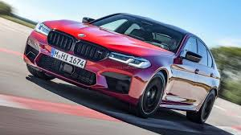
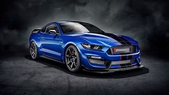
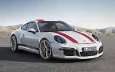
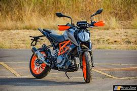
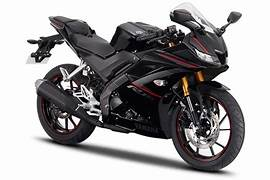

LIST OF VEHICLES
1- BMW M5

The BMW M5 is a high-performance variant of the BMW 5 Series marketed under the BMW M sub-brand. It is considered an iconic vehicle in the sports sedan category
2- FORD MUSTANG

The Ford SVT Mustang Cobra (also known as "SVT Mustang Cobra, SVT Cobra," or simply as "Cobra") is a pony car that was built by American automobile manufacturer Ford Motor Company's Special Vehicle Team division (or SVT) for the 1993 to 2004 model years.
3- PORSCHE

The Porsche Carrera GT (Project Code 980) is a mid-engine[4] sports car that was manufactured by German automobile manufacturer Porsche from 2004[5] to 2006.
4- DUKE390

There are major changes to the very substance of this motorcycle as well, all the way down to the heart of the matter: its engine.
5- R15

The Yamaha YZF-R15 is a single-cylinder sport bike made by Yamaha Motor Company in 2008.[1] In September 2011, the second iteration, called v2.0